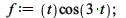
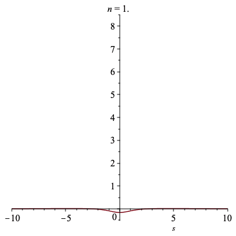
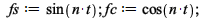
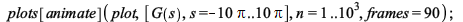

# Alexander Goodkind
# 12/03/2018
# DE Maple Project 2
| > |
| > | # load inntrans |
| > |
| > |
| > |
| > |
| > | # define f(t) as an expression that will be transformed |
| > |  |
| (1) |
| > | # perform laplace transform |
| > |
| (2) |
| > | # expand and simplify |
| > |
| > | # recover f(t) by performing an inverse laplace |
| > |
| (3) |
########################################################################################################
| > | # Solving IVPs |
| > | # load inntrans and define the DE |
| > |
| (4) |
| > | # initial conditions |
| > |
| (5) |
| > | # take laplace of the de |
| > |
| (6) |
| > | # solve in terms of X(s) |
| > |
| (7) |
| > | # subsitute initial conditions |
| > |
| (8) |
| > | # perform inverse laplace to get x(t) the solution |
| > |
| (9) |
########################################################################################################
| > | # Further investigation |
| > |
| (10) |
| > |
| (11) |
| > |
| (12) |
| > |
| > | # Conjecture: as n approaches a large number, the line approaches the straight line s=0 (y=0), that is, the area under the curve of the laplace approaches 0 |
| > | # defining animation range for n |
| > |
| (13) |
| > | # plotting from 1..90 |
| > |
| > | # tcos(3t)cos(nt) |
| > |
| (14) |
| > |
|  |
| > |  |
| (15) |
| > |
| (16) |
| > |
| (17) |
| > |
| (18) |
| > | # a.)
# a.1)the first graph looks to be apart of the normal distribution family of functions centered at s=1 when n=3, and as n gets very large it approachs a horizontal line (slope = 0) that approaches an asymptote of y = 0 (aka it approaches the line y=0) # a.2) the second graph looks to be apart of the family xe^{-x^2}, where there is a horizontal asymptote that is crossed at s=1 and the graph is shift to the right by 1 # as the graph approaches a large n it begins as a positive line (with a very shallow slope) where the slope slowly approachs 0 (that is, the graph approaches the horizontal line y=0) |
| > |
| > |
| > | #C.) both graphs approach the line y=0 |
| > |
| > | # final investigation |
| > |
| > |
| > |
| (19) |
| > | # The laplace transform.. |
| > |
| > |
| (20) |
| > |  |
| > | # Conclusion: the graph as n->a large number, changes from a 1/x looking function (where arctan is taken) to a graph of something similar to the heaviside function where 'off' is at -1.5 and 'on is at 1.5, however there is a vertical line x=0 (G(s)=0), that connects them. |
| > |